General
1a)
Un cuerpo ortoédrico (Caja de zapatos) tiene un peso de 10 N y
las superficies de sus caras son 50, 250 y 500 cm2 ¿Qué
presión ejercerá apoyado en cada una de las caras. Expresa
el resultado en kp/cm2 y Pa
b)
Un ladrillo de 7 x 10 x 50 cm apoyado sobre su cara menor ejerce una presión
de 0.8 Pa ¿Qué pre-sión ejercerá apoyado sobre
su cara mayor?
Solución
a)
Sustituyendo valores:
Al aumentar la superficie de apoyo disminuye la presión en la misma proporción |
|||
Calculamos la presión que ejerce el ladrillo apoyado sobre la cara menor (1) y la cara mayor (2):
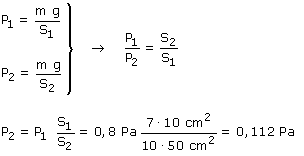
2Calcula la presión
que ejerce sobre su base una columna de agua 3 m de altura y sección:
a) 10 cm2 b) 50 cm2
Solución
|
3La presión hidrostática
en el fondo de un depósito de 1 m de profundidad es 7.84·103
Pa Calcula la densidad del líquido que contiene
Solución
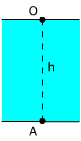 |
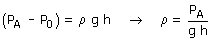 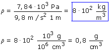 |
4Un vaso contiene agua y
aceite en capas de 5 cm. Calcula la presión: a) En el fondo del
vaso b) A 1 cm del fondo del vaso c) A 5 cm del fondo del vaso d) 1 cm
por debajo de la superficie libre del líquido
Densidades: Agua: 1000 kg/m3, Aceite: 900 kg/m3
Solución
Evidentemente la capa superior es aceite y la inferior, agua
|
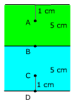 |
|
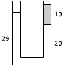 |
La columna de la derecha del tubo en U contiene aceite (Densidad: 900 kg/m3), determina la densidad del otro líquido (Las longitudes están dadas en cm)
|
Solución
 |
Trazamos una horizontal que pase por la división entre líquidos y calculamos la presión en dos puntos de la misma (Uno en cada rama)
|

Los puntos A y B, del mismo líquido, están al mismo nivel luego tendrán la misma presión

¿Y no se podría haber
tomado la horizontal que pasa por la superficie del líquido en
la rama izquierda?
No, el principio de la Hidrostática solo puede aplicarse dentro
de un mismo líquido
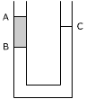 |
Los tubos comunicantes
de la figura contienen agua y aceite. Sabiendo que el desnivel AB
es 3 cm, calcula el desnivel CB
|
Solución
|
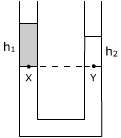 |
Trazamos una horizontal que pase por la división
entre líquidos y calculamos la presión en dos puntos
de la misma (Uno en cada rama) 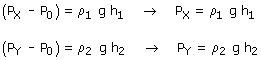
|
Los puntos X y Y están al mismo nivel luego tendrán la misma presión
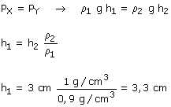
¿Y no se podría haber
tomado la horizontal que pasa por la superficie del líquido en
la rama derecha?
No, el principio de la Hidrostática solo puede aplicarse dentro
de un mismo líquido
|
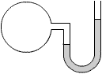 |
En el manómetro de la figura, la diferencia del nivel de mercurio entre las dos ramas es de 4 cm. Siendo la presión atmosférica 76 cm de mercurio calcula la presión del gas encerrado en el recipiente
|
Solución
En este problema se mezclan presión hidrostática y presión gaseosa, entonces la presión en la superficie del líquido (P0) es igual a la presión del gas con el que está en contacto
 |
La presión en el punto A es la presión del gas encerrado en el recipiente: P'0 Calculamos la presión en B aplicando el principio de la Hidrostática:
Evidentemente P0 es la presión atmosférica y h el desnivel entre ramas |
Los puntos A y B, dentro del mismo líquido, están al mismo nivel luego tendrán la misma presión

ρ·g·h es la presión que ejerce una columna de 4 cm de mercurio, obviamente esta presión será 4 cm de mercurio
P'0 = 4 cm mercurio + 76 cm mercurio = 80 cm mercurio
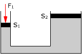 |
Las secciones de los émbolos de una prensa hidráulica son círculos de radios 5 y 50 cm respectivamente. Aplicando una fuerza de 10 N al embolo menor ¿qué fuerza aparecerá en el mayor? Determina el descenso del émbolo me-nor para que el mayor ascienda 2 cm
|
Solución
Presión en el émbolo menor:
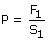
De acuerdo con el principio de Pascal esta misma presión aparece en el émbolo grande que sufrirá una fuerza:
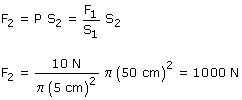
Si el émbolo mayor asciende una distancia d2 (2 cm) el volumen de líquido en su rama tiene que aumentar en V = S2·d2. Este aumento de volumen es igual a la disminución de volumen en la otra rama:
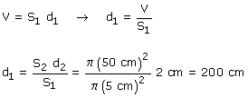
Observa que la fuerza del émbolo menor se multiplica por 100 pero su recorrido se divide por 100 de forma que el trabajo en ambos émbolos será el mismo
0Para elevar un camión de 2500 kg en un taller mecánico se utiliza un elevador hidráulico cuyo émbolo mayor tiene un radio de 15 cm y el menor tiene un radio de 1.5 cm ¿qué fuerza deberá hacer el motor para elevar el camión?
Solución
El émbolo mayor está sometido a la presión debida al peso del camión:
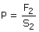
Esta misma presión aparece en el émbolo pequeño (Principio de Pascal):
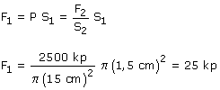